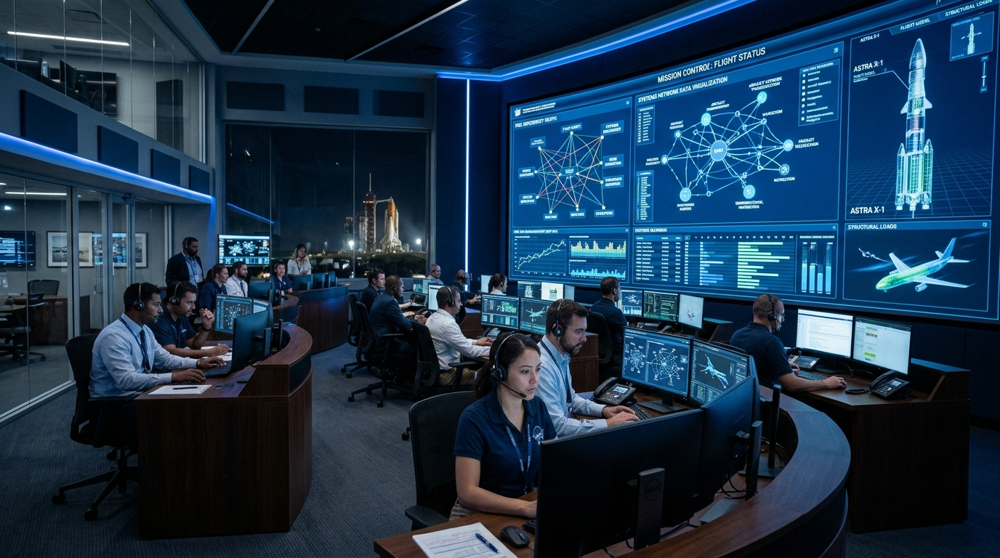
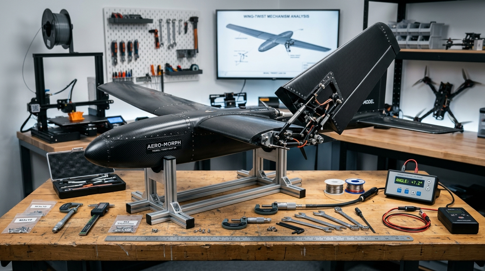

From aircraft structures to complex space systems, my work sits at the intersection of mechanical engineering, digital engineering and automation. I am pursuing an M.Sc. in Space Engineering at the University of Bremen, building on an Aeronautical Engineering background to develop reliable hardware for demanding aerospace applications.
Having contributed to spacecraft development through Critical Design Review (CDR), I bring practical experience in mechanical design, fluid hardware integration and CAD/PLM processes. Alongside this, I develop engineering software and work with simulation-driven methods to address structural and multiphysics problems. I am particularly interested in advancing automated FEM workflows, where robust numerical modelling, software development and rigorous verification and validation come together to support the design of spacecraft structures and payload subsystems.
Engineering Intern
Automation & Engineering Services Associate (Working Student)
Associate Engineer
Engineering challenges have given me the opportunity to work on problems beyond conventional academic projects, combining technical problem-solving, interdisciplinary collaboration and systems-level thinking.
Team Sicherflug, Universität Bremen | Airbus
Developed an integrated risk management concept addressing the challenge of managing risks and interdependencies across complex multi-programme aerospace portfolios.

Neuro-symbolic risk modeling & dependency mapping for large-scale aerospace programmes (Team Sicherflug)
Roadmap for a Serviceable Satellite Platform | ClearSpace
Project: Autonomous Lifecycle Management for Sustainable Space Infrastructure. Explored a service-oriented satellite infrastructure concept addressing the need for future spacecraft to be designed for servicing, refuelling, upgrading, and extended operational lifetimes.
Service-oriented infrastructure featuring modular refuelling, proximity communications, and SPAIDER AI
Team Lead – Portable Space-Grade Drill for Europa | Dhruva Space
Led a team in developing a conceptual portable drilling system for cryogenic ice-core sampling on Europa, one of Jupiter's Galilean moons, securing 1st place in the national aerospace challenge.
Autonomous cryogenic ice-core sampling drill designed for extreme radiation and thermal planetary conditions
Team Member – UAV & Aeromodelling

Rapid prototyping testbed featuring servo-actuated torque-tube kinematics and composite wing assembly
University of Bremen
Bremen, Germany
Apr 2023 – Present
Focus Areas: Product Assurance & Engineering Reviews (PDR/CDR), Spacecraft Structural Design & Fluid Systems
Key Courses: Design of Space Vehicles, Aerospace Structural Analysis, Materials and Processes for Spacecraft
Gujarat Technological University (SVIT, Vasad)
Anand, India
Jun 2018 – Apr 2022
Focus Areas: Aircraft Structures, Flight Mechanics, Aerodynamics
Final Grade: 1.3 (German scale)
Key Courses: Aircraft Structural Analysis, Flight Mechanics, Aerodynamics
In the Proceedings of the 9th International and 49th National Conference on Fluid Mechanics and Fluid Engineering (FMFP), Springer
December 2022, IIT Roorkee, India
Research focused on reducing axial fan tip losses by applying recess vane treatment to the casing.
IPINDIA (Application No.: 345880-001, CBR No.: 205010)
I'm currently open to new opportunities and collaborations. Feel free to reach out!